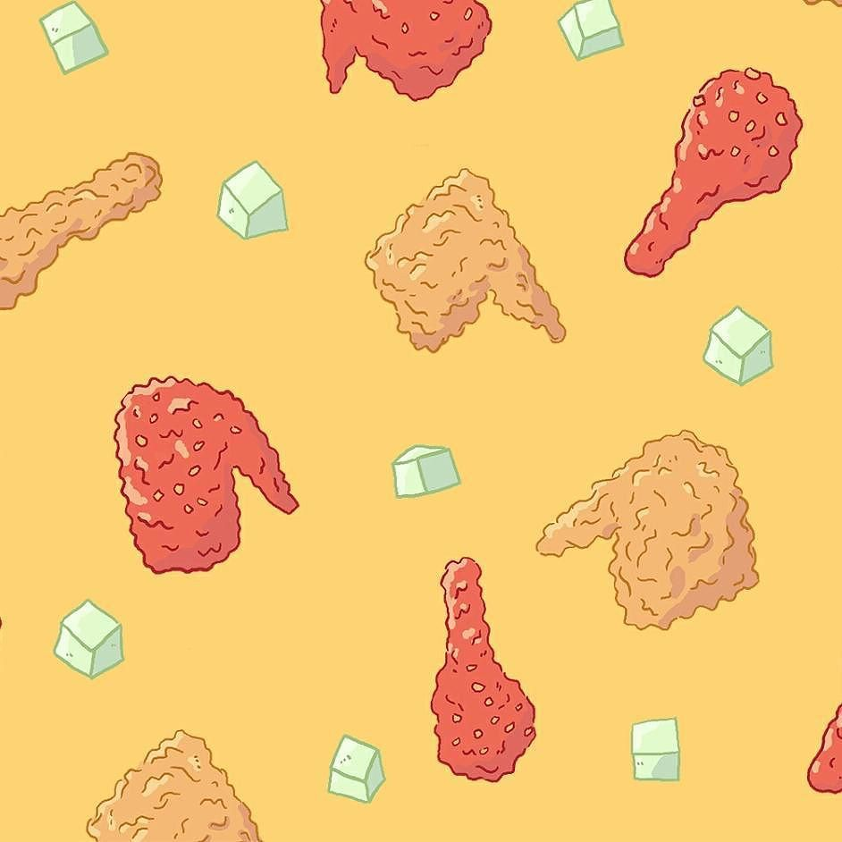

Korean fried chicken, usually called chikin in Korea, refers to a variety of fried chicken dishes created in South Korea. In South Korea, fried chicken is consumed as a meal, an appetizer, anju, or as an after-meal snack.
View item
Bubble tea is a tea-based drink that originated in Taiwan in the early 1980s. It most commonly consists of tea accompanied by chewy tapioca balls ("boba" or "pearls"), but it can be made with other toppings as well.
View item